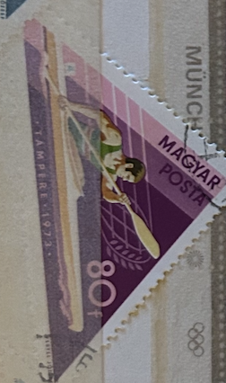
| SOURCE | TITLE| IMAGE MATCH | click to source page |
| eBay | MAGYAR HUNGARY STAMP MNH [SALE] [Choose 10pc of MINT is $3.5] unused WM9749 | eBay |  |
| Old-Stamps.com | Tampere 1973 / Magyarország | 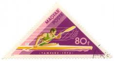 |
| Dreamstime.com | Rowing Crew Vintage Stock Photos - Free & Royalty-Free Stock Photos from Dreamstime |  |
| Does anyone know something about this imperforate 5 Franc Belgisk Congo? | 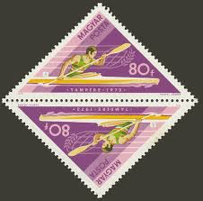 | |
| mintindia.in | www.mintindia.in: www.mintindia.in:We have launched this website with primary objective to spread education about various coins of India and around the earth to help each numismatist, Introducing huge collections of the antique material | 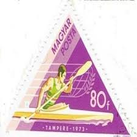 |
| World Stamps Project | West Germany – types and flaws on postage stamps (1980-1989) – World Stamps Project | 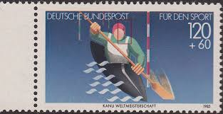 |
| Todocolección | hungria 1958 scott j241 sello º postage due num - Buy Antique stamps of Hungary on todocoleccion |  |
| The Philately | Hungary 1973 Mi 2919A-2925A Hungarian Victories in Water Sports at Tampere and Belgrade Sc 2261-2267 for sale at The Philately |  |
| eBay | COLLECTION OF HUNGARY OLYMPIC STAMPS (65 MNH) IN SMALL STOCK BOOK | eBay | 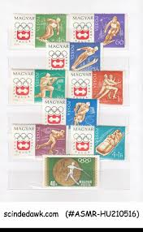 |
| eBay.de | 1985, Bundesrepublik Deutschland, 1239 I, gest. - 1765545 | eBay.de | 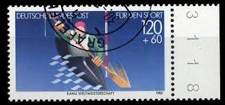 |
| mintindia.in | www.mintindia.in: www.mintindia.in:We have launched this website with primary objective to spread education about various coins of India and around the earth to help each numismatist, Introducing huge collections of the antique material |  |
| eBay | SE)1973 HUNGARY, WORLD WATER SPORTS CHAMPIONSHIPS, WOMEN'S KAYAK, PAIRS, WATER P | eBay |  |
| Etsy | Buy Selection of Stamps Related to Sports, Olympic Games, Football, Athletics, Weightlifting, Cycling, Gymnastics, Skating, Etc. Online in India - Etsy | 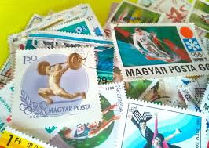 |
| eBay | ROMANIA 1980 13th Winter Olympic Games, MNH Full sheet Unused original skating | eBay | 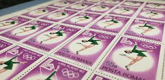 |
| buyhungarianstamps.com | 1787-1794 Hungary - 8th European Athletic Championships (MNH) – Eastern Europe Postage Stamps | Hungaria Stamp Exchange | 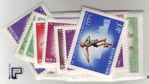 |
| Old-Stamps.com | Homenaje a los jugadores celebres Munich 74 / Rep. de Guinea Equatorial Correos 1974 | 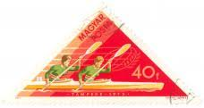 |
| eBay | HUNGARY:1973 SC#2261-67 Used CTO Hungarian victories in water sports at AJ915 | eBay | 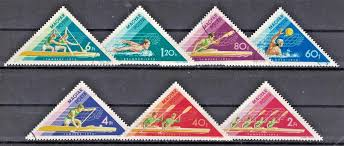 |
| Mystic Stamp Company | 1160 - 1956 Hungary - Mystic Stamp Company |  |
| eBay | HUNGARY 1973 Water Sports World Championships - MNH | eBay | 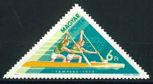 |
| eBay | Yugoslavia 1960 ☀ Sport - Olympic Games - Rome Italy ☀ MNH** | eBay | 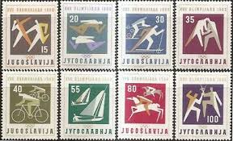 |
| eBay Australia | HUNGARY 1961 STEELWORKERS SPORTS S 1403-05+1963 EUROPEAN GAMES S 1484-86 CTO | eBay Australia | 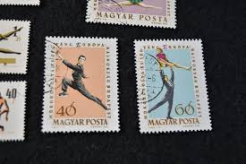 |
| The Philately | Hungary 1969 Mi 2477A-2484A Summer Olympic Games Sc 1950-1957 for sale at The Philately | 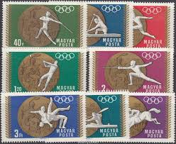 |
| eBay | Sport. 1952 Helsinki Olympics. | eBay |  |
| Allstamp | Slovakia B21-24, 1943 Sports: Allstamp.net | 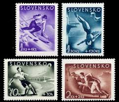 |
| eBay | HUNGARY (1963) 1964 WINTER OLYMPICS INNSBRUCK AUSTRIA SET SCT 1548-54, B234 | eBay | 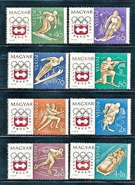 |
| stampphenom.com | Hungary 1980 Double Kayak - Imperforate – StampPhenom | 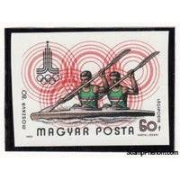 |
| eBay | Hungary Sc 1301-6,B217 MNH Full SET of 1960 - Olympics Winter Games | eBay | 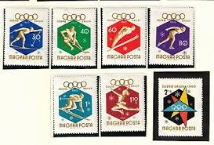 |
| eBay | World Hungary French Cols. Sport Wildlife MH Used (Apx 250) MK7472 | eBay |  |
| eBay | Romania 1984, Mi#4058-65 + Bl 207-208, Sc#3202-09, Los Angeles Olympics, MNH! | eBay | 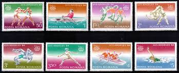 |
| Etsy | Vintage Postage Stamp Collection Sports and Olympic Games Worldwide Stamps 1950-1985 Album Book BIG Collection 258pcs 21 Letters and More - Etsy Canada | 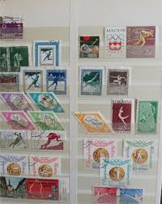 |
| eBay | HUNGARY^^^^^^1960 x8 used ( OLYMPICS) @ ga2934hung | eBay | 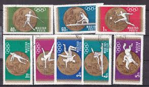 |
| eBay | Hungary E53 MNH 1963 8v Olympic Games | eBay | 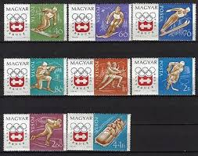 |
| Amazon.de | Prophila Collection Yugoslavia 1144-1148 (complete edition) 1966 World Cup in ice hockey (stamps for collectors) winter sports: Amazon.de: Toys | 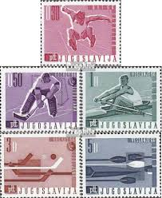 |
| eBay | Stamps Hungary 1952 Mi 1247-1252 (complete issue) MNH 1952 Olympics Summer 52 | eBay | 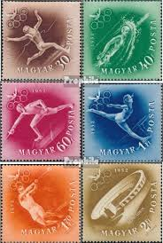 |
| Etsy | 5 Stamps Series From Hungary - Winter Olympic Games 1960 (T19) - Etsy | 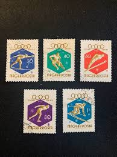 |
| eBay | S46912 Hungary MNH 1964 Olympic Games 10v +10v Perf + Imperf 2 Scans | eBay |  |
| eBay | Romania 1964 - SPORT. J.O. TOKYO, 4 stamps | eBay | 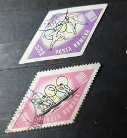 |
| eBay | HUNGARY , ITALY , 1960 OLYMPICS, SET OF 7 STAMPS , PERF , VLH | eBay | 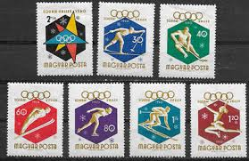 |
| Todocolección | hungria. sello 60 f magyar posta. squaw valley - Buy Stamps about the Olympic Games on todocoleccion | 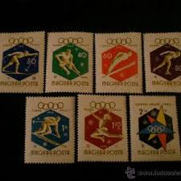 |
| eBay | 1960 Hungary Squaw Valley Olympics 5 Used Stamps #260st | eBay |  |
| The Philately | Poland 1984 Mi 2926-2929 Order of Grunwald Cross Sc 2630-2633 for sale at The Philately | 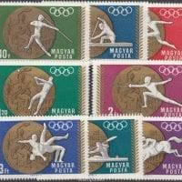 |
| Amazon.com | Polonia 1221 – 1224 (complete. problema.) 1961 Winterspartakiade (sellos para coleccionistas) deportes de invierno : Juguetes y Juegos - Amazon.com | 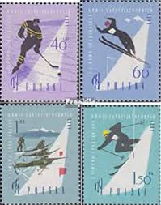 |
| Latinafy | Poland Stamps No. 1347 to 1355 | 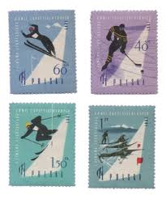 |
| eBay | HUNGARY OLD STAMPS 1964 - Olympic Games - Tokyo, Japan - Mint Hinged | eBay | 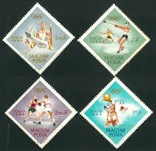 |
| eBay | Hungary - 1960 Olympic Games - Rome, Italy | eBay | 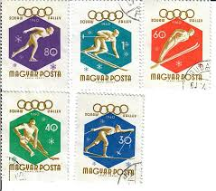 |
| eBay | Hungary 0157 MNH 1975 5v Sport OLYMPICS Hockey Skiing Skating | eBay | 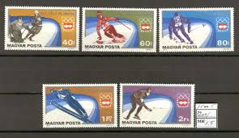 |
| eBay | M2381 JUGOSLAVIJA ARTISTIC GYMNASTICS SET OF STAMPS | eBay | 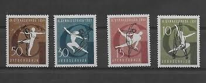 |
| eBay | Hungary 1964 Olympics INNSBRUCK MNH** Dentate and NOT | eBay | 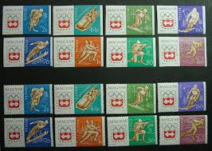 |
| eBay | HUNGARY 1961 STEELWORKERS SPORTS S 1403-05+1963 EUROPEAN GAMES S 1484-86 CTO | eBay | 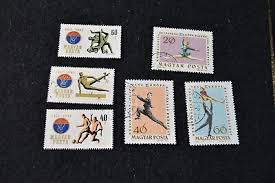 |
| eBay | 1964 Hungary Innsbruck Olympics 4 Used Stamps #261st | eBay | 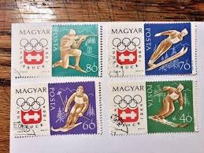 |
| eBay | Hungary, Magyar Posta Postage Stamp | eBay | 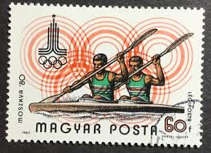 |
| eBay | JERSEY 1970-71 ISSUES ON 2 PAGES (LHM/UHM) *CLEAN & FRESH* | eBay | 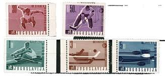 |
| Alamy | HUNGARY - CIRCA 1970: a stamp printed in Hungary shows Canoeing, Olympic Sport, circa 1970 Stock Photo - Alamy | 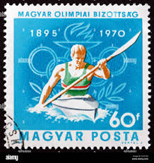 |
| Etsy | Nicaragua Stamps, Unused, Nicaragua Postage Stamps, Nicaraguan Stamps, Nicaraguan Postage Stamps, Unused Stamps, Stamp Collection - Etsy Canada | 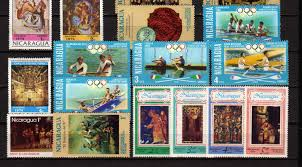 |
| eBay | Romania 1980, Mi#3733-3738 + Bl 171-172, Sc#2962-2968, Moscow Olympics, MNH! | eBay | 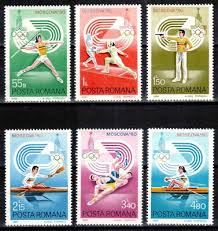 |
| eBay | ROMANIA , 1972 OLYMPICS , SPORTS , SET OF 6 , PERF , MNH | eBay | 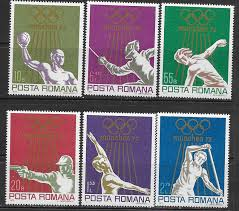 |
| eBay | Romania 3733-3738 (complete issue) used 1980 Olympics Summer | eBay | 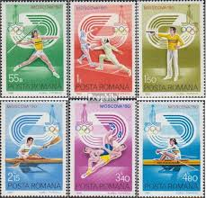 |
| eBay | Hungary Stamps-SPORTS-SKI JUMP -20Ft, #3328, block of 4, MNH | eBay | 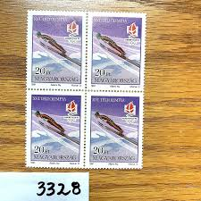 |
| eBay | ROMANIA - 1964 TOKYO OLYMPICS - MEN'S KAYAK DOUBLES - OG - CTO | eBay | 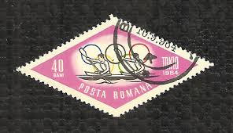 |
| eBay | 43871] Yugoslavia 1980 Olympic Winter Games Lake Placid Nordic skiing MNH | eBay | 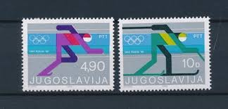 |